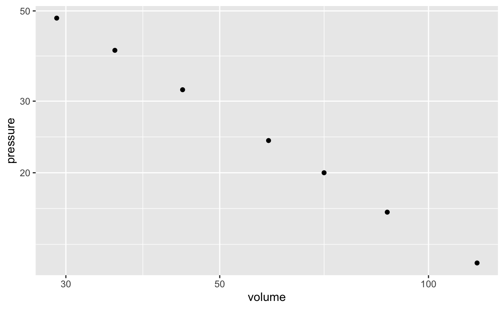
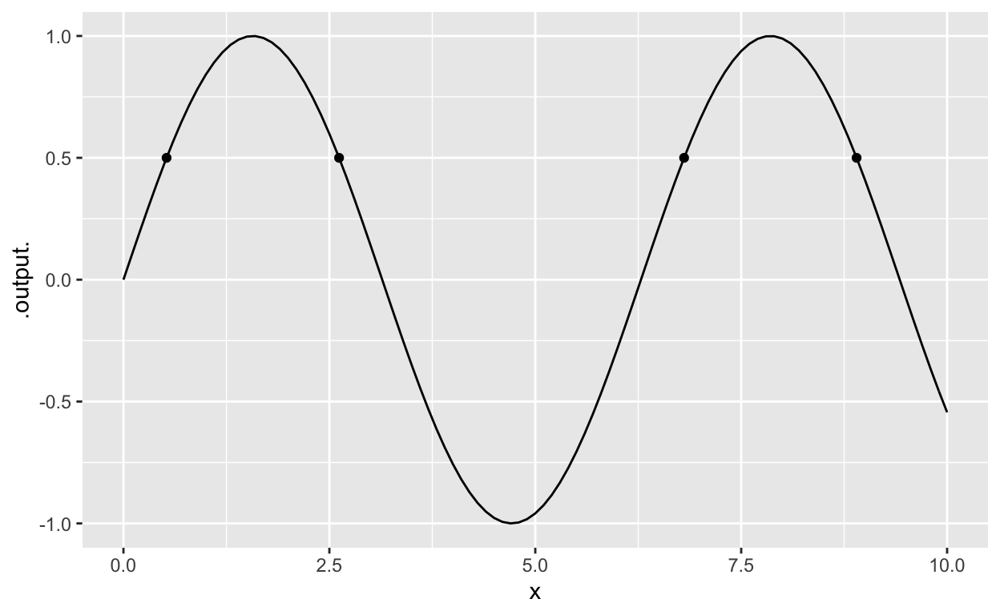

SANDBOX
The sandbox below can be used for any of the computations needed to follow the MOSAIC Calculus textbook.
The contents of the sandboxes are cached in your browser, so you can save your work when you want to take a break.
Sandboxes A, B, … provide a place to cache your work so while you continue to work in the primary sandbox. All the sandboxes look the same, but they do not communicate with each other. Each is a blank slate aside from the commands you have entered or cached in them.
Sandbox A
# You can add comments by starting a line with the `#` mark.Sandbox B
# You can add comments by starting a line with the `#` mark.Sandbox C
Sandbox D
Prof. Schaubroeck’s Essential R
Assignment: Giving names to values
x <- 2- What it does Stores the value 2 under the name
x - Vocabulary
- This is an assignment statement
<-is the assignment operator- Overall, the effect of the command is to assign a name to the value 2
- Notes
- You make the left-pointing arrow by using the “less than” sign followed by a hyphen.
- Your commands will be more readable if you put a space on either side of
<-. But never put a space between the two characters in the arrow. 2 <- xmight make sense to a human, but in R it will lead to an error message, “invalid(do_set) left-hand side to assignment.”- An assignment statement does not have any printed output, so there will be no indication of having done anything, other than the absence of error messages.
- What it does Stores the value 2 under the name
x(or any other name)- What it does Provides the value previous stored under that name
- Vocabulary Names are assigned to objects.
- Notes
- A name can be used as a complete command, with the result of printing to the screen the object stored under that name.
- Valid names cannot contain spaces, or any punctuation character except
.and_ - Valid names cannot start with a numeral.
Function application: Evaluating a function on an input
sqrt(3)- What it does The first example calculates \(\sqrt{3}\).
- Vocabulary
sqrtis the name of a function- 3 is the input to the function
sin. Another word for input is argument. - The parentheses surrounding the argument come after the function name.
sin(3)causes the sine calculation to be carried out.
- Notes
- Spaces are allowed just about anywhere, but not in the middle of a name.
- If you capitalize one of the functions, you get an error message such as “could not find function "Sin".”
- Later, you will write statements like
sqrt(x). For this to work,xmust have been previously assigned to a value. If there is no such assignment, you’ll get an error code such as “object "x" not found.”
Writing mathematical formulas
(3 + 7 * sin(2*pi*x)) / (x^2 - 4)- What it does Expresses a formula which would traditionally be written \[\frac{3 + 7\,\sin(2 \pi x)}{x^2 - 4}\]
- Vocabulary
- The outer parentheses in
(3 + 7 * sin(2*pi*x))are grouping parentheses. Grouping parentheses do what you would expect: govern the order of the operations. - The parentheses following
sininsin(2*pi*x)are function evaluation parentheses. These signal to R that you want to evaluate the function on the input contained inside the parentheses.
- The outer parentheses in
- Notes
- You can always identify function evaluation parentheses, since they will be immediately preceeded by the name of a function. Grouping parentheses are not preceeded by a function name.
- You will use grouping parentheses more often in R than in traditional notation, because there is no use of superscripts or \(\div\) in R. All commands are a line of typewriter characters.
- Multiplication must be made explicit, using the
*character. - Exponentiation is signified with the
^character, as inx^2 - Giving the above as a stand-alone calculator-style command will fail, unless you have previously assigned values to each of the names (e.g.
x) used in the formula. Typically you will write formulas in tilde expressions. (See below.)
Tilde expressions
A tilde expression is a special feature of R that let’s you write down a mathematical expression without having the expression evaluated. We use tilde expressions to construct our own mathematical functions and for a handful of other, related purposes such as plotting.
y^2 + 3*y ~ y- What it does A tilde expression does not cause any computation to be done. It is simply a way of writing down a mathematical relationship for use later on.
- Vocabulary
- The tilde is a character little used in English. It looks like ~. Most US keyboards place it in the upper-left key.
- There are two R expressions involved, one on the left-hand side of the tilde, the other on the … need we say it? … right-hand side. In the example,
y^2 + 3*yis the left-hand side and plain, ordinaryyis on the right-hand side. - In R/mosaic, The translation of tilde into English is any of the following: “[left] is a function of [right]”, or “[left] versus [right]” or “[left] depends on [right]”.
- Notes
- You will always use a tilde expression as an argument to a function. It is merely a description of how the two sides are related and doesn’t by itself cause any computation to be done. As such, you will never use it as a stand-alone command.
- Many of the tilde expressions we use in MOSAIC Calculus will have more than one name in the right-hand side expression. The multiple names are separated by
+or&(either will do). The+does not mean “add them,” it’s merely a way of saying “and.” For instance, the right-hand side in `3xexp(y) ~ x + y"
Constructing your own mathematical functions
g <- makeFun(2 + 3*x - 7*x^2 ~ x)- What it does Creates an R function named
gcorresponding to \(g(x)\equiv 2 + 3x - 7\,x^2\) - Vocabulary
makeFun()is a function constructor- The argument to
makeFun()is a tilde expression
- Notes
- The name of the input goes on the right side of the tilde ~
- Like all names,
makeFun()is case sensitive. So usingmakefun(note: lower-casefinfun) won’t work. - If you use just the name of your function as a command, that is,
g, you will get the output ``` function (x)
2 + 3 * x - 7 * x^2 <environment: 0x55d2ee828678> ```* x^2
The first line tells you that you defined g as a function of x. The second line tells the formula for it. The third line is relevant only to advanced R programmers; you can ignore it.
- What it does Creates an R function named
Graphing functions with a single input
slice_plot(exp(x) ~ x, domain(x = -3 : 3))- What it does Draws a graph of the function \(e^x\) with the horizontal axis running from \(-3 \leq x \leq 3\).
- Vocabulary
- The first argument is a tilde expression.
- The second argument specifies the domain to use in the graph, that is, the extent of the horizontal axis. This will always be in the form shown above: applying the
domain()function to a named argument. - A named argument consists of two parts: a name and an R expression. In the example, the name is
xand the R expression is \(-3 : 3\). That R expression means “from -3 to 3.” The colon (:) is essential punctuation; it’s what separates grammatically the lower end of the domain from the upper end. (For experienced R users: If you prefer to use the formc(-3,3)instead of the colon, that works. For specialized R programmers: The ordinary integer orientation of:is suspended withindomain()so the limits you give will be treated exactly.) - The plotting function is called
slice_plot()because we think of a function of one input as a slice of a multivariable surface, but we won’t get into that immediately.
- Notes
- Used as shown above, there will be three consecutive closing parentheses at the end of the command.
- The argument to
domain()will always be named. That name should match the one on the right-hand side of the tilde expression. - You will always use
c()to collect together the lower and upper bounds of the graphics domain. To graph the function from 0 to 10, you would replace thec(-3,3)withc(0, 10). - The extent of the vertical axis, that is, the range, is determined automatically.
- Useful additional arguments
- You can draw the function in a color by adding an additional argument, e.g.
color="blue". To see the full list of named colors in R, give the commandcolors()in a sandbox. (You need the empty parentheses, otherwise you’ll be shown the software underlying the list of colors.) Notice that the color should always be in quotes, e.g."green"or"darkorchid". - You can draw a thicker curve with the
sizeargument, for instancesize=2. - If you want the curve to be semi-transparent, for instance so that you can see another curve underneath, use the argument
alpha = 0.2. The alpha value can range from 0.0 (completely invisible) to 1.0 (completely opaque).
- You can draw the function in a color by adding an additional argument, e.g.
- Common mistakes
- If you type
slice_plot(exp(x)~x, domain(c(-3,3)))(leaving out the namexinsidedomain()), you get an error of, “Domain involves 0 variables, but function has 1” - If you type
slice_plot(exp(x)~x, domain(t=c(-3,3)))(mismatching names in tilde expression and domain), you get an error of, “Domain has variable(s) t but function has argument(s) named x” - If you type
slice_plot(exp(x), domain(x=c(-3,3)))(forgetting the~xin the tilde expression), you get an error of, “object ‘x’ not found” - If you type
slice_plot(exp(x)~x), you get an error of, “Domain must be specified when there is no preceeding layer.” Aside from the misspelling of preceding, this is telling the user that there wasn’t a previous graph to pull the domain from, so you need to specify the domain as an argument toslice_plot(). - If you leave out a closing parenthesis, you will get the error of, “Error in parse(text = x, keep.source = TRUE) :
:4:0: unexpected end of input 2:…”
- If you type
Drawing contour plots
In MOSAIC Calculus, we generally use a contour-plot format to display graphically a function with two inputs. This is done in much the same way as slice_plot().
contour_plot(3 + 2*x - 4*y + 0.5*x*y ~ x & y, domain(x=-5 : 5), y=0 : 10))- What it does Draws a contour plot on a domain with two dimensions.
- Vocabulary Nothing here that you haven’t seen in
slice_plot(): tilde expression, domain, … - Notes
- The tilde expression names two inputs on the right-hand side. Those names should match the ones in the left-hand side and in the arguments to
domain(). - The right-hand side of the tilde can be written either with
+or&. Both have the same effect. - There are two arguments to
domain(), one for each of the two inputs to the function being plotted. - The input represented on the horizontal axis is determined by the first name in the arguments to
domain(). The vertical axis is set by the second name. - The extent of the domain for one input doesn’t need to match the extent for the other input.
- The tilde expression names two inputs on the right-hand side. Those names should match the ones in the left-hand side and in the arguments to
- Useful additional arguments After the tilde expression and the
domain()statement, you can add additional named arguments, separated as always by commas, to customize your graph.skip = 0Label every one of the contours, rather than the default of skipping one between labels.filled = FALSEDon’t color in the background. This is particularly useful when showing two or more graphical layers.contour_color = "blue"(or any other color) Instead of using the function output level to determine the color of each contour, use just one color for all. This is useful when, for example, you want to show just the zero contour of each of two functions.
Evaluating mathematical functions with two inputs
When you use makeFun() to define a function of two inputs, the created function will take two arguments, one for each of the inputs. Those arguments are named and it is a good idea when evaluating the function you created using the names explicitly.
h <- makeFun(x + 15*y - x*y ~ x + y)h(y=3, x=2)- What it does Evaluates the function \(h()\) with the \(x\) input set to 2 and the \(y\) input set to 3.
- Vocabulary
- Named inputs let you direct a value to a specific input.
- Notes
- The way we defined the example function
h(), the first argument will bexand the secondy. So you could perform the same evaluation as in the above command withh(2, 3). But it’s easy to forget or mistake the order of the arguments. Using the named-argument style makes it clearer which value is intended for which argument. - You may notice commands like
slice_plot(h(x=x, y=3) ~ x, domain(x=c(-1,1))). At first glance, this may look silly. What it means is that the \(x\) argument to \(h()\) will take on the set of values inside the domain, which is itself written in terms of \(x\).
- The way we defined the example function
Layering graphics
Sometimes you may want to compare two or more functions in the same graphics frame. You do this by drawing the individual functions in the usual way, but connecting the commands with a pipe, signified by the token %>%
slice_plot(x^2 ~ x, domain(x=c(-2, 2))) %>% slice_plot(sin(x) ~ x, color="blue")- What it does Overlays one graphics layer on another.
- Vocabulary
- The
%>%symbol is pronounced “pipe” - A command involving a pipe is called a pipeline. Think of the calculation as flowing from one command to the next, left to right.
- The
- Notes
- If you have specified the
domain()at an early stage in the pipeline, you don’t need to specify it again in the later plotting commands. But, if you want, feel free to set the domain explicitly. This is helpful if you want the graphics domains to be different for the different layers. - You can add as many stages as you like to the pipeline. Each stage will add a new graphics layer. But remember that the last stage should not be followed by the pipe symbol.
- It’s a good idea to write a pipeline with one line for each stage, with the pipe symbol at the end of each stage. Like this:
slice_plot(x^2 ~ x, domain(x=c(-2,2))) %>% slice_plot(sin(x) ~ x, color="blue") - If you have specified the
Data frames
Essentially all of the data we use in this course is arranged as data frames. (This is also true in statistics and data science generally.) A data frame is a rectangular array. Each column is called a variable, each row is a case. For instance, in a data frame about people, each row might be an individual person. The different variables record different aspects of that person: height, age, sex, state of residence, etc. All of the entries within a column must be the same kind of thing: a number for height, a postal abbreviation for state, and so on. There are three kinds of things you will do with data frames:
- Look at them to orient yourself or browse.
- Access a variable.
- Wrangle them, for example extracting a subset of cases or combining data from two different data frames. Data wrangling is an important skill, but it isn’t the topic of this course. So when you need to wrangle data, we’ll tell you how.
For this course, almost all data will be provided by giving you the name of dataframes. Sometimes this name will be simple and in the usual form, e.g. EbolaAll. Other time, the name will be preceded with information about where the computer should look for the data, e.g. palmerpenguins::penguins.
Some simple, helpful commands for orienting yourself to a data frame: - names(EbolaAll) tells you the names of the columns in the data frame. - head(EbolaAll) shows the first several rows. - DT::datatable(EbolaAll) will show the entire data frame interactively, allowing you to page through the data. - help(EbolaAll) displays documentation about the data frame.
Once you know the basic facts of a data frame—what the variable names are and what kind of thing each variable records—you are ready to use the data in your work. Two common tasks are (1) to plot one variable versus another and (2) to use the variables in some calculation, such as fitting a model. Both tasks use much the same syntax based on tilde expressions.
For instance:
- to plot the number of Ebola cases in Guinea versus date:
gf_point(Gcases ~ Date, data = EbolaAll). (See the “plotting data” section of this document.) The variable names (GcasesandDate) are used in the tilde expression, while the name of the data frame is specified in other argument, the named argumentdata=. - For model-fitting, see below.
Plotting data
There is one type of data graphic that we will be using in this course: the point plot (also known as a “scatter plot”). There are, of course, many other kinds of statistical graphics such as density plots, jittered plots, etc. which you will learn about in a statistics course, but we will not use them here.
A point plot always involves two variables from a data frame. To illustrate, consider the palmerpenguins::penguins data frame, where each case is a individual penguin.
DT::datatable(palmerpenguins::penguins)Suppose we want to look at flipper length versus body mass. The appropriate command is:
gf_point(flipper_length_mm ~ body_mass_g, data = palmerpenguins::penguins)## Warning: Removed 2 rows containing missing values (geom_point). Each row in the data frame generates one dot in the plot: the \(y\) and \(x\) coordinates of the dot are set by the value of the variables named in the tilde expression. \(y\) is always the first name, on the left-hand side of the tilde.
Each row in the data frame generates one dot in the plot: the \(y\) and \(x\) coordinates of the dot are set by the value of the variables named in the tilde expression. \(y\) is always the first name, on the left-hand side of the tilde.
There is a wide variety of ways to customize the plot: size, shape, transparency of the dots, etc. A statistics course can show you why you would want to use these modalities. For our purposes in this course, there are just three sorts of customizations:
- Rather than a linear axis (the default), show the data using a log axis. The penguin data is not suitable for an example, because the linear axes work perfectly well. (All penguins are approximately the same size.) So, as an example, we’ll use a very small data set from Robert Boyle’s experiments around 1660 on the relationship bretween the pressure and volume of a gas (at constant temperature).
# linear axes: the default
gf_point(pressure ~ volume, data = Boyle) # Log-log axes
gf_point(pressure ~ volume, data = Boyle) %>%
gf_refine(scale_x_log10(), scale_y_log10()) To make a semi-log plot, use the scale_y_log10() and leave out the scale_x_log10() argument to gf_refine(0).
Note: Log-log or semi-log axes are a valuable way to present data to a human reader, because the value of the variables for any point can be read directly from the axes. But sometimes your purpose is not to present data but to estimate a parameter in a power-law or exponential relationship. For the purpose of estimating parameters, better to make an ordinary plot with linear axes, but plot the log of the variable(s) rather than the variables themselves. For instance:
gf_point(log(pressure) ~ log(volume), data = Boyle)
- Using color to display a third variable in a scatter plot. An example with the penguin data will suffice.
gf_point(flipper_length_mm ~ body_mass_g,
data = palmerpenguins::penguins,
color = ~ sex)## Warning: Removed 2 rows containing missing values (geom_point). Notice the tilde before the variable name in the color= argument. You can also set the color to be a fixed values, e.g. color="magenta".
- Set the limits of an axis. Sometimes the upper and lower bounds on the axes selected by R are inappropriate for your purpose. When this is the case, you can set the limits yourself by piping the graphic to the
gf_lims()function. For instance, the penguin graph above shows that females have somewhat smaller flipper length than males, and somewhat smaller weights as well. But because zero was not used as the lower limit of the axes, the plot overstates the sex differences. Including zero as an axis limit is often appropriate.
gf_point(flipper_length_mm ~ body_mass_g,
data = palmerpenguins::penguins,
color = ~ sex) %>%
gf_lims(y=c(0,235), x=c(0,6500))## Warning: Removed 2 rows containing missing values (geom_point).
Fitting functions to data
Finding parameters to match a function to data can be a matter of trial and error. The fitModel() R/mosaic function can be used to polish a preliminary fit.
For instance, as every chemistry student knows, Boyle’s Law states that at constant temperature, pressure and volume are inversely related: \(P = a V^{-1}\). Let’s see how well Boyle’s data matches his law by fitting a general power-law form \(P = a V^{n}\) to his data.
At the core of fitModel() is a tilde expression that specifies the name of the function output (on the left side of the tilde) and a functional form written in terms of the names of the inputs to the function. Parameters are written using names.
mod <- fitModel(pressure ~ a*volume^n, data = Boyle)The object created by fitModel() is a function of the variables on the right-hand side of the tilde expression, just volume here. You can use that mathematical function like any other that you create with makeFun() or the like. For instance:
gf_point(pressure ~ volume, data = Boyle) %>%
slice_plot(mod(volume) ~ volume, color="magenta") But unlike other functions, you can interrogate the functions produced by fitModel(0) to see the numerical values of the parameters. This is done with the coef() function (as in “coefficients”).
coef(mod)## a n
## 1370.8544316 -0.9931137a is proportional to temperature.
Default values for parameters in functions
Suppose you were creating a function to represent the distance travelled by an object in free fall as a function of time from some initial point in time \(t_0\). The mathematical relationship is \[\text{dist}(t) \equiv v_0 \left[\strut t - t_0\right] + \frac{1}{2} g \left[\strut t - t_0\right]^2\]
To evaluate this function, you need to know the three parameters \(v_0, t_0,\) and \(g\). On Earth, \(g=-9.8\) meters/sec\(^2\), but you may not know \(v_0\) or \(t_0\) until it comes time to use the function in some context. It’s tempting to put in numerical values for the parameters to make the function easy to use. For instance, if the object starts from rest at time \(t=0\), it would be tempting to make the R definition something like:
dist <- makeFun(0*(t-0) - 9.8*(t-0)^2 / 2 ~ t) or even makeFun(-9.8*t^2 / 2 ~ t)
A better practice is to create the function with the parameter names shown explicitly:
dist <- makeFun(v0 * (t - t0) + g*(t-t0)^2/2 ~ t)
Unfortunately, the resulting function will have four arguments which have to be specified every time you use it. A nice compromise is to assign default values for the parameters. For instance \(t_0 = 0\) and \(v_0 = 0\) and \(g = -9.8\) meters/sec\(^2\) would be sensible.
You specify the default parameters by adding them as additional arguments after the tilde expression.
dist <- makeFun(v0*(t-t0) + g*(t-t0)^2 / 2 ~ t, g=-9.8, v0=0, t0=0)This way, you can use the function simply when the default parameters are appropriate, or modify them as needed. For instance, the free-fall distance over two seconds:
on_Earth <- dist(2)
on_Mars <- dist(2, g=-3.7)Calculating derivatives
“Calculating a derivative” means to find the function that is the derivative of a specified function. In R/mosaic this can be done in exactly the same way that makeFun() works. For instance:
df <- D(exp(t) * cos(t) ~ t)
df## function (t)
## exp(t) * cos(t) - exp(t) * sin(t)
## <environment: 0x7fc59108f388>slice_plot(df(t) ~ t, domain(t=0:10))The name on the right-hand side of the tilde expression will be the “with respect to” variable. If you want a second derivative, use and expression like t + t on the right-hand side. You can also calculate mixed partial derivatives with right-hand side expressions like t & x.
R/mosaic knows how to use both numerical and symbolic methods. To force the use of numerical methods, use numD() instead of D().
Calculating anti-derivatives
Anti-derivatives can be computed with antiD(). For example:
antiD(sin(omega*t) ~ t)## function (t, C = 0, omega)
## 1/(omega) * -cos(omega * t) + C
## <environment: 0x7fc59108f388>R/mosaic knows only a few symbolic anti-derivatives. When it doesn’t know the symbolic form, the function produced by antiD() will use numerical methods.
Solving (zero-finding)
“Solving” means to find an input \(x^\star\) that will generate an output of \(v\) from \(f(x)\). That is, the answer \(x^\star\) will give \(f(x^\star) = v\). There may be no solutions, one solutions, several or many solutions.
In R/mosaic, solving is implemented as the Zeros() function. Zeros() looks for solutions where \(f(x^\star) = 0\), but any solution problem, regardless of \(v\), can be placed in this form.
Zeros() is used in the same way as many other R/mosaic functions: the first argument is a tilde expression, the second is a domain. The output will be a data-frame with the solutions found. For instance, here we find the inputs to \(\sin(x)\) that produce an output of 0.5. Notice that we have created a new function (\(\sin(x) - 0.5\)) whose output will be zero at the solutions we seek.
solutions <- Zeros(sin(x) - 0.5 ~ x, domain(x=0:10))
slice_plot(sin(x) ~ x, domain(x=0:10)) %>%
gf_point(0.5 ~ x, data = solutions)
solutionsOptimization (with derivatives)
In optimization, you have an objective function \(f(x)\) and you seek the argmin(s) or argmax(es). The textbook introduces optimization using a technique involving differentiating and solving, that is, finding \(x^\star\) such that \(\partial_x f(x^\star) = 0\). We’ll illustrate with a made-up function:
f <- rfun(~ x, seed=943) # a random function
slice_plot(f(x) ~ x, domain(x=-5:5))It’s so easy to spot the argmins and argmaxes from a graph that it’s reasonable to wonder why we need derivatives and solving to do it. The answer is that we are helping you establish a conceptual foundation for more interesting optimization problems where you can’t just look at a graph. So let’s step through the problem formally using derivatives.
- Construct the derivative of the objective function with respect to its argument.
df <- D(f(x) ~ x)If there were symbolic parameters in your definition of \(f()\), you would need to resolve them at this point, assigning the parameters definite numerical values. 2. Find the zeros of the derivative function:
dzeros <- Zeros(df(x) ~ x, domain(x=-5:5))
dzerosThe output of Zeros() has two columns. The first lists the solutions, the second gives the value of the function at those solutions. Note that the function output is very close to zero, there’s not really any information there. And there’s nothing that tells you whether a given \(x\) is an argmax or an argmin. Of course, you could figure this out by referring to the graph of \(f(x)\) itself, but let’s be a little more formal by extracting this information from dzeros, f(), and the second derivative of f(). To do this, we introduce a new function, mutate(), that operates on data frames. And we’ll need the second derivative \(\partial_{xx}f()\) to establish whether the function is concave up or down at the solutions found.
ddf <- D(f(x) ~ x & x)Here’s where mutate() comes in, allowing us to apply the functions f() and ddf() to the x values in the solution. The first command might look strange. It means, "Take the old data frame dzeros, add some new columns to it using mutate(), and then calling the new data frame by the old name dzeros.
dzeros <- dzeros %>%
mutate(val = f(x), convexity = sign(ddf(x)))
dzerosFrom the sign of the convexity at the solutions \(x\), you can tell immediately which rows correspond to an argmin (positive convexity) and which to an argmax (negative convexity).
For fun, we can graph our findings on top of the function \(f()\) to confirm that we have things right:
slice_plot(f(x) ~ x, domain(x=-5:5)) %>%
gf_point(val ~ x, data = dzeros, color= ~ convexity)Optimization (generally)
Optimization is such an important procedure that clever algorithms to handle all sorts of difficulties has been invented. This is an extensive topic in its own right, but for simplicity, R/mosaic provides a function argM() that works with functions with multiple inputs, pretty much automatically. It’s called argM() because it returns both argmins and argmaxes, along with some supplemental information.
argM(f(x) ~ x, domain(x=-5:5))argM() will not necessarily find all the local argmins and argmaxes. But it also works for functions with multiple inputs.
f2 <- makeFun(x*sin(sqrt(3+x))*(1+cos(y))-y ~ x & y)
solns <- argM(f2(x, y) ~ x & y, domain(x=c(-3,3), y=c(-3,3)))
solnscontour_plot(f2(x,y) ~ x & y, domain(x=c(-3,3), y=c(-3,3))) %>%
gf_point(y ~ x, data = solns, color="red")Still under development
Matrices
Finding solutions to the target problem
Solving differential equations
Examples of commands
Basic modeling functions
identity_fun <- makeFun(x ~ x)
constant_fun <- makeFun(1 ~ x)
straight_line <- makeFun(m*x + b ~ x, b=0, m=1)
exponential <- makeFun(exp(k * x) ~ x, k=1)
power_law <- makeFun(x^p ~ x, p = 1/2)
sinusoid <- makeFun(2*pi*(t-t0)/P ~ t, P=2, t0=0)
logarithm <- makeFun(log(x, base=exp(1)) ~ x)
gaussian <- makeFun(dnorm(x, mean, sd) ~ x, mean=0, sd=1)
sigmoid <- makeFun(pnorm(x, mean, sd) ~ x, mean=0, sd=1)
identity_fun(3)
constant_fun(3)
power_law(3)Assembling functions
# Linear combination (example)
f <- makeFun(a0 + a1*exp(k * x) ~ x, a0=30, a1=150, k=-0.5)
# Product (example)
g <- makeFun(dnorm(x, mean=0, sd=3) * sin(2*pi*t/P) ~ x + t, P=3)
# Composition (example)
h <- makeFun(exp(sin(2*pi*t/P) ~ x) ~ x, P = 3)Graphing functions
slice_plot(dnorm(x, mean=1, sd=2) ~ x,
domain(x=c(-5, 5)))
contour_plot(dnorm(x, mean=1, sd=2) * pnorm(y, mean=-3, sd=1) ~ x + y,
domain(x=c(-5, 5), y=c(-5,5)))Calculus operations
f <- makeFun(exp(-0.5*x) * sin(2*pi*x/3) ~ x)
df <- D(f(x) ~ x)
slice_plot(df(x) ~ x, domain(x=c(-5, 5))) %>%
slice_plot(f(x) ~ x, color="orange3")f <- makeFun(dnorm(x, mean=1, sd=2) ~ x)
F <- antiD(f(x) ~ x)
slice_plot(F(x) ~ x, domain(x=c(-5, 5))) %>%
slice_plot(f(x) ~ x, color="orange3")
# Set "constant of integration"
slice_plot(F(x) ~ x, domain(x=c(-5, 5))) %>%
slice_plot(f(x) ~ x, color="orange3") %>%
slice_plot(F(x, C=0.25) ~ x, color="green")
# Definite integral
F(5) - F(-5)f <- makeFun(exp(sin(2*pi*x/3)) - 0.5 ~ x)
Zeros <- findZeros(f(x) ~ x, near=0, within=5)
Zeros
slice_plot(f(x) ~ x, domain(x=c(-5,5))) %>%
gf_hline(yintercept=0, color="orange3") %>%
gf_vline(xintercept= ~ x, color="dodgerblue", data=Zeros)Fitting functions to data
Use fitModel() to fit a function of one variable to data.
- The tilde expression uses the names in the data frame.
- Response variable on left of tilde, formula for function on right.
- Give starting values for any nonlinear parameters (e.g. \(k\) in \(e^kt\) or \(P\) in $( t).
gf_point(temp ~ time, data = CoolingWater)
# Eyeball half-life at 25
k0 <- -log(2)/25
mod <- fitModel(temp ~ A + B*exp(-k*time), data=CoolingWater,
start=list(k=k0))
Plot <- gf_point(temp ~ time, data = CoolingWater) %>%
slice_plot(mod(time) ~ time, color="dodgerblue", alpha=0.25, size=2) Linear and quadratic approximations
Approximate a function \(f(x)\) around a selected point \(x=x_0\).
f <- makeFun(exp(-0.5*x)*sin(2*pi*x/3) ~ x)
x0 <- 0.9
df <- D(f(x) ~ x)
ddf <- D(df(x) ~ x) # alternatively, D(f(x) ~ x + x)
lin_approx <- makeFun(f(x0) + df(x0)*(x-x0) ~ x)
quad_approx <- makeFun(lin_approx(x) + 0.5*ddf(x0)*(x-x0)^2 ~ x)
slice_plot(f(x) ~ x, domain(x=c(0, 1.5)), size=2) %>%
slice_plot(lin_approx(x) ~ x, color="blue") %>%
slice_plot(quad_approx(x) ~ x, color="orange") %>%
gf_vline(xintercept = x0, alpha=0.2, color="yellow", size=3)